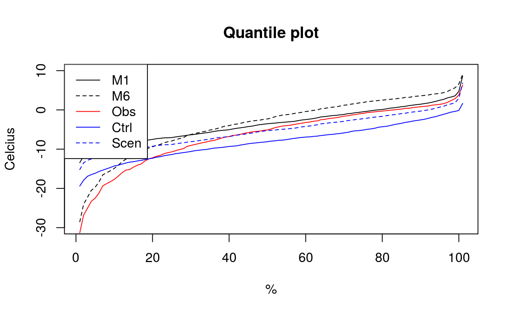
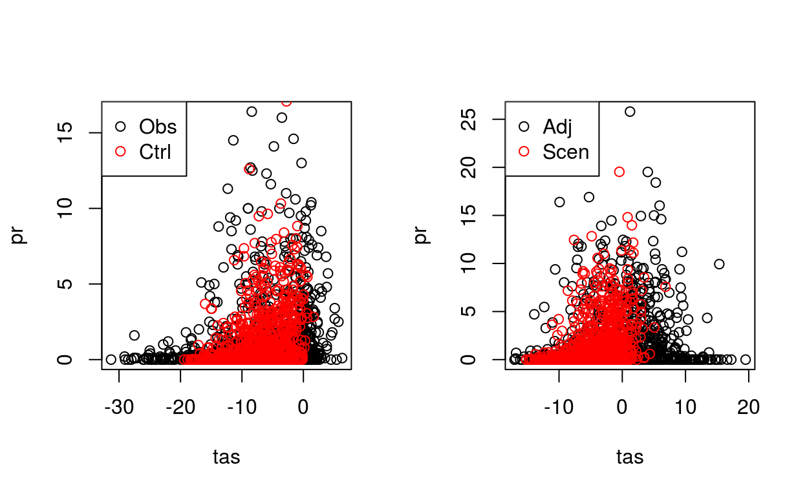

Authors:
Version: 0.0-1
License: GPL (>= 3)
A set of delta change and bias correction methods designed for bias adjusting absolute and ratio variables and a 2D method to adjust the intervariable structure of two variables. The implemented methods are described in more detail in “Räisänen and Räty (2013)”, “Räty et al. (2014)” and “Li et al. (2014)”.
R (>= 3.1.0)
moments, MASS, fitdistrplus, copula, methods, Rdpack, lubridate
testthat, knitr, rmarkdown, packagedocs
A dataset containing the time series of 2m daily mean temperature and daily precipitation simulated with CNRM-ALADIN5.3 at 0.11 degree resolution using RCP4.5 emission scenario forcings in a grid box nearest to Jyväskylä airport (25.68 E, 62.40 N).
ALADIN_JyvaskylaA data frame with 54819 rows and 3 variables:
…
A data.frame containing the daily time series of daily mean temperature and daily precipitation measures in the Jyväskylä airport (25.68 E, 62.40 N) between 1951-2017. Missing values have been replaced with previous day’s values.
station_JyvaskylaA data frame with 24139 rows and 3 variables:
…
biasco returns bias corrected data as an object of type BiascoTimeSeries. Several methods of different complexity are available in the package (see details).
biasco(obs.in, ctrl.in, scen.in, type = "abs", method = "M1", ...)type recognizes two values:
scen.in. The following options are available:
BiascoTimeSeries, which contains the adjusted data and parameter values related to a particular method.
The following univariate methods have curretnly been implemented in this package:
type = ratio, then Engen-Skaugen algorithm is used.
type = ratio, M3 corresponds to delta change scaling of mean and standard deviation using.
library(lubridate)##
## Attaching package: 'lubridate'## The following object is masked from 'package:base':
##
## datelibrary(copula)##
## Attaching package: 'copula'## The following object is masked from 'package:lubridate':
##
## intervallibrary(BCUH)
data("station_Jyvaskyla")
data("ALADIN_Jyvaskyla")
ctrl <- c(1971,2000)
scen <- c(2071,2100)
#Extract data for January
ind.obs <- which(month(station_Jyvaskyla$date) == 1 &
year(station_Jyvaskyla$date) %in% seq(ctrl[1],ctrl[2]))
ind.ctrl <- which(month(ALADIN_Jyvaskyla$date) == 1 &
year(ALADIN_Jyvaskyla$date) %in% seq(ctrl[1],ctrl[2]))
ind.scen <- which(month(ALADIN_Jyvaskyla$date) == 1 &
year(ALADIN_Jyvaskyla$date) %in% seq(scen[1],scen[2]))
obs.ctrl <- station_Jyvaskyla[ind.obs,]
rcm.ctrl <- ALADIN_Jyvaskyla[ind.ctrl,]
rcm.scen <- ALADIN_Jyvaskyla[ind.scen,]
#Create objects which contain the bias corrected data
dc.object <- biasco(obs.ctrl$tas, rcm.ctrl$tas, rcm.scen$tas, type = "abs", method = "M1")
bc.object <- biasco(obs.ctrl$tas, rcm.ctrl$tas, rcm.scen$tas, type = "abs", method = "M6")
dc.object## *** Class BiascoTimeSeries, method show ***
## * method = [1] "M1"
## * bc.attributes = list()
## * adj@nvar = [1] 1
## * adj@Dim = [1] 930
## * adj@data (limited to first 100 values) =
## [1] -9.668 -17.07 -3.168 -2.168 -18.27 -16.17 -1.968
## [8] 5.732 5.132 8.332 8.932 3.432 -4.368 2.032
## [15] 1.732 0.7319 -2.268 1.932 5.132 3.932 4.832
## [22] 4.832 4.232 4.932 6.132 6.232 4.732 -2.568
## [29] -7.268 -10.87 -6.868 4.432 -4.468 1.232 0.1319
## [36] -11.07 -10.77 -1.968 -3.968 -2.068 -2.468 -4.168
## [43] -16.07 -5.068 -4.668 -8.568 -6.368 -6.268 -10.27
## [50] -16.17 -7.268 -2.568 -1.668 1.932 4.432 2.432
## [57] -2.468 -16.97 -21.07 -22.47 -19.07 -10.17 5.632
## [64] 3.232 4.832 -0.7681 7.432 5.632 0.5319 5.332
## [71] -1.568 4.432 -0.3681 1.532 2.032 -4.268 0.7319
## [78] 1.032 -0.5681 -2.568 -3.268 -8.268 -6.868 -5.068
## [85] -2.568 -0.06815 5.732 5.832 3.932 -2.668 -5.968
## [92] -5.368 -3.068 -0.8681 -8.168 2.032 3.332 3.932
## [99] 3.032 0.5319
## ******* End Show (BiascoTimeSeries) *******#Visualise the results
plot(quantile(dat(adj(bc.object)), seq(0,1,0.01)), type = "l",
main="Quantile plot", xlab = "%", ylab = "Celcius", ylim = c(-30,10))
lines(quantile(dat(adj(dc.object)), seq(0,1,0.01)), lty = 2)
lines(quantile(obs.ctrl$tas, seq(0,1,0.01)), col = "red")
lines(quantile(rcm.ctrl$tas, seq(0,1,0.01)), col = "blue")
lines(quantile(rcm.scen$tas, seq(0,1,0.01)), col = "blue", lty = 2)
legend("topleft", c("M1","M6","Obs","Ctrl","Scen"),
col = c("black","black","red","blue","blue"), lty = c(1,2,1,1,2))
biasco2d for two-dimensional bias correction of temperature and precipitation
A wrapper function for a copula-based bias correction method of temperature and precipitation
biasco2D(obs.in, ctrl.in, scen.in, names = NULL, cond = "P", threshold = 0.1, ...)obs.in
obs.in
cond = “P” then the precipitation marginal is adjusted first, while the adjustment of temperature is made conditionally on precipitation
threshold is handled as zero precipitation
library(lubridate)
library(BCUH)
#Load data
data("station_Jyvaskyla")
data("ALADIN_Jyvaskyla")
#Extract data for January
ctrl <- c(1971,2000)
scen <- c(2071,2100)
ind.obs <- which(month(station_Jyvaskyla$date) == 1 &
year(station_Jyvaskyla$date) %in% seq(ctrl[1],ctrl[2]))
ind.ctrl <- which(month(ALADIN_Jyvaskyla$date) == 1 &
year(ALADIN_Jyvaskyla$date) %in% seq(ctrl[1],ctrl[2]))
ind.scen <- which(month(ALADIN_Jyvaskyla$date) == 1 &
year(ALADIN_Jyvaskyla$date) %in% seq(scen[1],scen[2]))
obs.ctrl <- station_Jyvaskyla[ind.obs,2:3]
rcm.ctrl <- ALADIN_Jyvaskyla[ind.ctrl,2:3]
rcm.scen <- ALADIN_Jyvaskyla[ind.scen,2:3]
biasco2d.object <- biasco2D(obs.ctrl,rcm.ctrl,rcm.scen, names = c("tas", "pr"))## Warning in .local(.Object, ...): Overwriting original colnames
## Warning in .local(.Object, ...): Overwriting original colnames
## Warning in .local(.Object, ...): Overwriting original colnames## Warning in sqrt(diag(vc)): NaNs produced## initial value 3093.621400
## final value 3093.621226
## converged
## initial value 3093.621226
## final value 3093.621124
## stopped after 1 iterations
## initial value 2696.916265
## final value 2696.824655
## converged
## initial value 2696.824655
## final value 2696.567380
## stopped after 1 iterations
## [1] "P"#Visualise the results:
par(mfrow=c(1,2))
plot(obs.ctrl)
points(rcm.ctrl,col="red")
legend("topleft",c("Obs","Ctrl"),col=c("black","red"),pch=c(1,1))
plot(dat(adj(biasco2d.object)))
points(rcm.scen,col="red")
legend("topleft",c("Adj","Scen"),col=c("black","red"),pch=c(1,1))